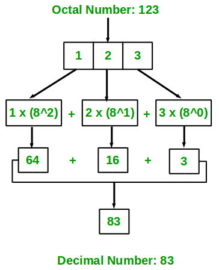

Given an octal number as input, we need to write a program to convert the given octal number into equivalent decimal number.
Examples:
Input : 67
Output : 55
Input : 512
Output : 330
Input: 123
Output: 83
The idea is to extract the digits of given octal number starting from right most digit and keep a variable dec_value. At the time of extracting digits from the octal number, multiply the digit with the proper base (Power of 8) and add it to the variable dec_value. At the end, the variable dec_value will store the required decimal number.
For Example:
If the octal number is 67.
dec_value = 6*(8^1) + 7*(8^0) = 55
Below diagram explains how to convert octal number ( 123 ) to equivalent decimal value:

Below is the implementation of above idea.
// C++ program to convert octal to decimal
#include <iostream>
using namespace std;
// Function to convert octal to decimal
int octalToDecimal(int n)
{
int num = n;
int dec_value = 0;
// Initializing base value to 1, i.e 8^0
int base = 1;
int temp = num;
while (temp) {
// Extracting last digit
int last_digit = temp % 10;
temp = temp / 10;
// Multiplying last digit with appropriate
// base value and adding it to dec_value
dec_value += last_digit * base;
base = base * 8;
}
return dec_value;
}
// Driver program to test above function
int main()
{
int num = 67;
cout << octalToDecimal(num) << endl;
}
// Java program to convert octal to decimal
import java.io.*;
class GFG {
// Function to convert octal to decimal
static int octalToDecimal(int n)
{
int num = n;
int dec_value = 0;
// Initializing base value to 1, i.e 8^0
int base = 1;
int temp = num;
while (temp > 0) {
// Extracting last digit
int last_digit = temp % 10;
temp = temp / 10;
// Multiplying last digit with appropriate
// base value and adding it to dec_value
dec_value += last_digit * base;
base = base * 8;
}
return dec_value;
}
// driver program
public static void main(String[] args)
{
int num = 67;
System.out.println(octalToDecimal(num));
}
}
// Contributed by Pramod Kumar
// C# program to convert octal to
// decimal
using System;
class GFG {
// Function to convert octal
// to decimal
static int octalToDecimal(int n)
{
int num = n;
int dec_value = 0;
// Initializing base value
// to 1, i.e 8^0
int b_ase = 1;
int temp = num;
while (temp > 0)
{
// Extracting last digit
int last_digit = temp % 10;
temp = temp / 10;
// Multiplying last digit
// with appropriate base
// value and adding it to
// dec_value
dec_value += last_digit
* b_ase;
b_ase = b_ase * 8;
}
return dec_value;
}
// driver program
public static void Main()
{
int num = 67;
Console.WriteLine(
octalToDecimal(num));
}
}
// This code is contributed by vt_m.
<?php
// PHP program to convert octal to decimal
// Function to convert
// octal to decimal
function octalToDecimal($n)
{
$num = $n;
$dec_value = 0;
// Initializing base value
// to 1, i.e 8^0
$base = 1;
$temp = $num;
while ($temp)
{
// Extracting last digit
$last_digit = $temp % 10;
$temp = $temp / 10;
// Multiplying last digit
// with appropriate base
// value and adding it
// to dec_value
$dec_value += $last_digit * $base;
$base = $base * 8;
}
return $dec_value;
}
// Driver Code
$num = 67;
echo octalToDecimal($num);
// This code is contributed by anuj_67
?>